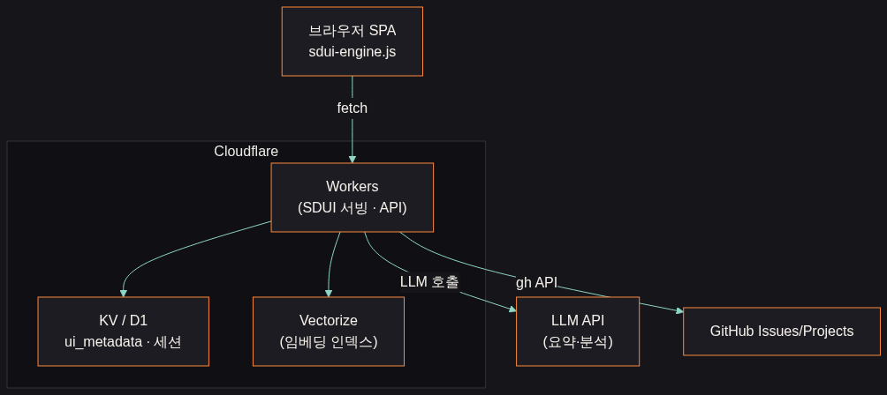
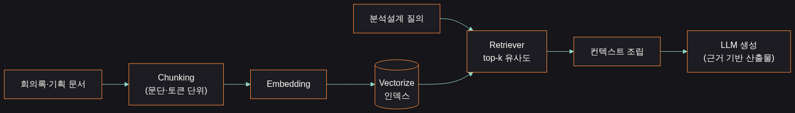
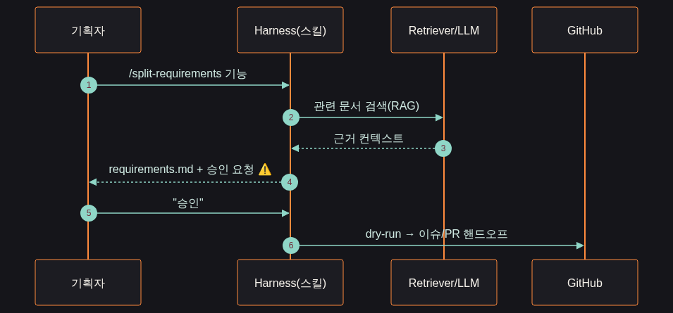

For Developers · 개발자 사용법
이 사이트를 개발에 붙이는 법
1
플러그인으로 스킬 설치
claude plugin marketplace add feed-mina/planning-harness- 어느 프로젝트에서든 8개 기획 스킬 사용.
2
개발 repo에 @claude 봇 연결
templates/github-actions/claude-dev-bot.yml복사- 이슈 댓글 @claude 로 PR 자동 생성.
3
핸드오프 경계 준수
- 에이전트는 제안·PR만.
- 직접 배포·시크릿 변경·리뷰 우회는 금지(사람이 머지).
4
SSOT = spec.md
- 모든 산출물의 기준은 spec.md. 규칙은 CLAUDE.md.
- 충돌은 분해 전에 점검.
Architecture · 아키텍처
SDUI on Cloudflare Workers
확인된 사실: 앱은 Cloudflare Workers가 SDUI 엔진(sdui-engine.js)과 API를 서빙하는 SPA입니다. 저장/인덱스 계층은 설계 제안입니다.

Cloudflare · 연결 구조
무엇을 어디에 매핑하나
| Cloudflare | 역할 | 상태 |
|---|---|---|
| Workers | SDUI 메타데이터 렌더 · REST API · LLM/gh 호출 오케스트레이션 | 확인 |
| KV / D1 | ui_metadata · 세션 · 회의록 메타 저장 | 제안 |
| Vectorize | 문서 임베딩 인덱스(RAG 리트리버) | 제안 |
| R2 | 녹음·첨부 원본 보관(민감정보 분리) | 제안 |
| Pages | 회의록 메이커 정적 배포(docs/) | 확인 |
LLM Design · RAG
분석설계에 RAG를 쓰는 법 (설계 제안)
설계 제안: 문서→chunk→embedding→Vectorize 인덱스, 질의 시 top-k 리트리버로 근거를 모아 LLM이 산출물을 생성합니다.

1
Chunking
- 회의록·기획 문서를 문단/토큰 단위로 분할.
- 헤딩·발화자 경계를 살려 컨텍스트 손실 최소화.
2
Embedding & Index
- 청크를 임베딩해 Vectorize에 저장.
- 회의 날짜·기능 태그를 메타데이터로 부착.
3
Retriever
- 분석설계 질의를 임베딩해 top-k 유사 청크 검색.
- 최근성·태그로 재랭킹.
4
Grounded Generation
- 검색 컨텍스트를 프롬프트에 조립해 근거 있는 requirements/logic 산출물 생성.
- 출처를 함께 남김.
Control Plane · 승인 게이트
스킬 → RAG → 승인 → 핸드오프
스킬이 RAG로 근거를 모아 산출물을 만들고, ⚠️ 승인 후에만 dry-run→이슈/PR 핸드오프가 일어납니다.

Summary · 정리
핵심 요약 & 라이선스
- 확인: 앱은 Cloudflare Workers 위 SDUI SPA — 클라이언트 배포 없이 서버 메타데이터로 화면 제어.
- 설계 제안: KV/D1·Vectorize·R2로 저장·RAG·원본 분리를 매핑(실제 구성에 맞게 조정 필요).
- RAG(chunk→embed→retriever→grounded generation)로 분석설계 산출물의 근거성을 확보.
- 모든 위험 작업은 승인 게이트 통과 후에만 GitHub에 반영 — 에이전트는 제안·PR까지만.